Guía de Criaturas, Peinados... en Animal Crossing AC
Basada en la original de
guiasnintendo.
| Insecto | Bayas | Ubicación | Meses Mejores meses |
Horas Mejores horas y frecuencia (5-1) |
|
|---|---|---|---|---|---|
| Mariposa común | 90 | Flores | De marzo a junio Septiembre Abril y mayo |
De 4 a 19 De 8 a 16 De 8 a 17 (4) |
|
| 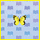 | Mariposa colias | 90 | Flores | De marzo a junio Septiembre Abril y mayo |
De 4 a 19 De 8 a 16 De 8 a 17 (4) |
| Mariposa tigre | 160 | Flores rosas y rojas | De marzo a junio Julio y agosto Septiembre De marzo a junio |
De 4 a 19 De 8 a 17 De 8 a 16 De 8 a 17 (3) |
|
| 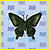 | Mariposa bianor | 220 | Flores azules, moradas y negras | De marzo a junio Julio Agosto Septiembre Mayo y junio |
De 4 a 19 De 4 a 17 De 8 a 17 De 8 a 16 De 8 a 17 (3) |
| 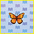 | Mariposa monarca | 140 | Flores | Septiembre y octubre Noviembre Octubre |
De 4 a 17 De 8 a 17 De 8 a 16 (5) |
| 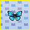 | Mariposa celeste | 2500 | Flores | De junio a septiembre Julio Agosto |
De 19 a 8 De 4 a 8 y de 23 a 4 (2) De 4 a 8 (2) |
| Mariposa narciso | 3000 | Flores | De junio a septiembre | De 8 a 17 (1) | |
| 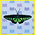 | Mariposa alas Brooke | 2500 | Ríos o estanques | Mayo Junio De julio a septiembre De julio a septiembre |
De 8 a 17 De 8 a 19 De 8 a 17 De 16 a 17 (2) |
| 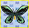 | Mariposa alas pájaro | 4000 | Flores | De junio a septiembre | De 8 a 16 (1) |
| Polilla | 60 | Fuentes de luz | De mayo a septiembre Junio y agosto |
De 19 a 4 De 23 a 4 (4) |
|
| 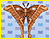 | Polilla de seda | 1200 | Troncos de árboles | De junio a septiembre De junio a agosto |
De 19 a 4 De 23 a 4 (2) |
| 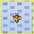 | Abeja melífera | 100 | Flores | De marzo a junio Julio De marzo a junio |
De 8 a 17 De 8 a 16 De 8 a 17 (3) |
| Abeja | 2500 | Sacudiendo árboles | Todo el año | Las 24 horas (5) | |
| 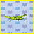 | Langosta alargada | 200 | Suelo | De mayo a noviembre Septiembre y noviembre |
De 8 a 19 De 8 a 19 (3) |
| 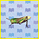 | Langosta migratoria | 600 | Suelo | De agosto a noviembre Septiembre y octubre Noviembre |
De 8 a 19 De 8 a 16 y 17 a 19 (3) De 8 a 16 (3) |
| 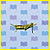 | Langosta | 400 | Suelo | De agosto a noviembre De agosto a octubre |
De 8 a 19 De 8 a 19 (2) |
| 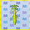 | Mantis religiosa | 430 | Flores | De abril a noviembre De abril a junio + agosto |
De 8 a 17 De 8 a 17 (2) |
| 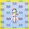 | Mantis orquídea | 2400 | Flores blancas | De abril a noviembre De septiembre a noviembre |
De 8 a 17 De 8 a 17 (2) |
| 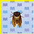 | Cigarra marrón | 200 | Troncos de árboles | Julio y agosto Julio y agosto |
De 8 a 17 De 8 a 16 (4) |
| 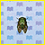 | Cigarra oriental | 300 | Troncos de árboles | Julio y agosto Julio y agosto |
De 8 a 17 De 8 a 16 (4) |
| 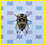 | Cigarra gigante | 500 | Troncos de árboles | Julio y agosto | De 8 a 17 (3) |
| 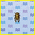 | Cigarra común | 400 | Troncos de árboles | De julio a septiembre Agosto |
De 8 a 17 De 8 a 17 (3) |
| 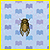 | Cigarrilla | 550 | Troncos de árboles | Julio y agosto Julio y agosto |
De 4 a 8 y de 16 a 19 De 17 a 19 (5) |
| 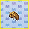 | Muda de cigarra | 100 | Troncos de árboles | Julio y agosto | Las 24 horas (2) |
| 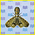 | Machaca | 1800 | Troncos de árboles | Junio y septiembre Julio y agosto De junio a septiembre |
De 16 a 19 y de 23 a 8 De 16 a 8 De 17 a 19 (2) |
| 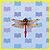 | Libélula roja | 80 | Volando | Septiembre y octubre Septiembre y octubre |
De 8 a 19 De 16 a 17 (5) |
| 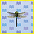 | Libélula cab. diablo | 200 | Volando | De junio a agosto Junio |
De 8 a 17 De 8 a 17 (3) |
| 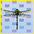 | Libélula tigre | 4500 | Volando | Julio y agosto Agosto |
De 8 a 17 De 8 a 17 (2) |
| 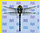 | Libélula gigante | 8000 | Volando | De agosto a octubre | De 17 a 19 (1) |
| 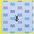 | Hormiga | 80 | Fruta y nabos podridos en el suelo | Todo el año | Las 24 horas (4) |
| 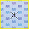 | Zapatero | 130 | Ríos y estanques | Mayo De junio a septiembre Junio |
De 8 a 17 De 8 a 19 De 17 a 19 (3) |
| 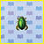 | Escarabajo nadador | 800 | Ríos y estanques | De mayo a septiembre Junio |
De 8 a 17 De 8 a 17 (2) |
| 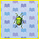 | Chinche | 120 | Troncos de árboles | De abril a octubre | Las 24 horas (1) |
| 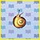 | Caracol | 250 | Arbustos (días lluviosos) | De abril a septiembre Mayo Junio |
Las 24 horas De 16 a 8 (3) De 4 a 19 (3) |
| 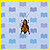 | Grillo común | 130 | Suelo | De septiembre a noviembre Septiembre Octubre |
De 17 a 8 De 19 a 8 (5) De 19 a 4 (5) |
| 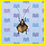 | Grillo campana | 430 | Suelo | Septiembre y octubre | De 17 a 8 (4) |
| 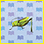 | Saltamontes | 160 | Suelo | Julio Agosto y Septiembre Septiembre |
De 16 a 17 De 8 a 17 De 8 a 17 (3) |
| 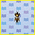 | Grillo cebollero | 280 | Bajo tierra (cavando) | De noviembre a mayo | Las 24 horas (2) |
| 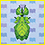 | Insecto hoja | 600 | Suelo | De julio a septiembre | De 8 a 17 (1) |
| 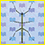 | Insecto palo | 600 | Troncos de árboles | Julio y agosto De septiembre a noviembre |
De 4 a 8 y 17 a 19 (2) De 4 a 19 (2) |
| 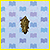 | Oruga de bolsón | 300 | Sacudiendo árboles | Octubre De noviembre a febrero Noviembre |
De 17 a 8 Las 24 horas Las 24 horas (3) |
| 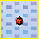 | Mariquita | 200 | Flores | De marzo a junio + octubre De marzo a mayo |
De 8 a 17 De 8 a 17 (3) |
| 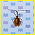 | Escarabajo violín | 260 | Tocones | Junio Septiembre y octubre Noviembre |
De 4 a 19 (2) De 4 a 17 (2) De 8 a 17 (2) |
| Longicornio | 260 | Tocones | Julio y agosto | De 23 a 19 (2) | |
| 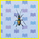 | Escarabajo tigre | 1500 | Suelo | De marzo a septiembre Octubre |
De 8 a 19 (1) De 4 a 17 (1) |
| 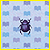 | Escarabajo pelotero | 800 | Cerca de bolas de nieve | De diciembre a febrero De diciembre a febrero |
De 17 a 8 De 23 a 8 (2) |
| 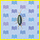 | Cochinilla de arena | 200 | Playa | Todo el año | Las 24 horas (1) |
| Cangrejo ermitaño | 1000 | Playa de Isla Tropical | Todo el año | De 19 a 8 (2) | |
| 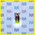 | Luciérnaga | 300 | Agua dulce | Junio | De 19 a 4 (5) |
| 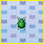 | Escarabajo verde | 100 | Troncos de árboles, sobre todo de la Isla Tropical | Julio y agosto Septiembre Julio y agosto |
Las 24 horas De 19 a 8 De 17 a 4 (3) |
| 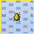 | Escarabajo oro | 6000 | Troncos de árboles, sobre todo de la Isla Tropical | De junio a agosto | De 23 a 8 (2) |
| 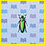 | Escarabajo joya | 2400 | Troncos de árboles, sobre todo de la Isla Tropical | Julio y agosto | De 8 a 17 (2) |
| 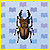 | Esc. ciervo Miyama | 1000 | Troncos de árboles, sobre todo de la Isla Tropical | Julio y agosto Agosto |
Las 24 horas De 4 a 8 y 19 a 23 (3) |
| 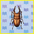 | Esc. ciervo sierra | 2000 | Troncos de árboles, sobre todo de la Isla Tropical | Julio y agosto Julio y agosto |
Las 24 horas De 19 a 8 (2) |
| 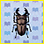 | Esc. ciervo gigante | 10000 | Troncos de árboles, sobre todo de la Isla Tropical | Julio y agosto | De 23 a 8 (2) |
| Esc. ciervo arcoíris | 10000 | Troncos de árboles, sobre todo de la Isla Tropical | Junio y septiembre Julio y agosto |
De 19 a 8 (1) De 17 a 8 (1) |
|
| Esc. ciervo cyclom. | 8000 | Palmeras de la Isla Tropical | Julio y agosto Agosto |
De 17 a 8 De 4 a 8 (2) |
|
| Esc. ciervo tornasol | 12000 | Palmeras de la Isla Tropical | Julio y agosto | De 17 a 8 (1) | |
| Esc. astado japonés | 1350 | Troncos de árboles, sobre todo de la Isla Tropical | Julio y agosto Julio y agosto |
De 17 a 8 De 23 a 8 (3) |
|
| Esc. astado atlas | 8000 | Palmeras de la Isla Tropical | Julio y agosto Agosto |
De 17 a 8 De 19 a 23 (2) |
|
| Esc. astado elefante | 8000 | Palmeras de la Isla Tropical | Julio y agosto Agosto |
De 17 a 8 De 4 a 8 (2) |
|
| Esc. astado hércules | 12000 | Palmeras de la Isla Tropical | Julio y agosto | De 17 a 8 (1) | |
| Goliat | 6000 | Palmeras de la Isla Tropical | Junio y septiembre Julio y agosto Julio y agosto |
De 19 a 8 De 17 a 8 De 19 a 4 (2) |
|
| Pulga | 70 | Vecinos del pueblo | De marzo a noviembre | Las 24 horas (1) | |
| Cochinilla | 250 | Bajo rocas (rompiéndolas) | De septiembre a junio Julio y agosto De noviembre a marzo |
Las 24 horas De 19 a 4 Las 24 horas (3) |
|
| Mosquito | 130 | Volando | De junio a septiembre De junio a agosto |
De 17 a 4 De 17 a 19 (5) |
|
| Mosca | 60 | Basura y nabos podridos | Todo el año | Las 24 horas (5) | |
| Ciempiés doméstico | 250 | Bajo rocas (rompiéndolas) | De agosto a octubre | De 19 a 8 (2) | |
| Ciempiés | 300 | Bajo rocas (rompiéndolas) | De junio a febrero | De 16 a 23 (2) | |
| Araña | 300 | Sacudiendo árboles | De marzo a junio + septiembre Julio y agosto Octubre Abril y mayo Junio Julio Agosto Septiembre |
Las 24 horas De 19 a 8 De 23 a 16 De 16 a 8 (3) De 4 a 8 y 17 a 19 (3) De 4 a 8 y 19 a 23 (3) De 19 a 23 (3) De 23 a 8 (3) |
|
| Tarántula | 8000 | Suelo | De junio a agosto | De 19 a 4 (1) | |
| Escorpión | 8000 | Suelo | De julio a septiembre | De 19 a 4 (1) | |
| Pez | Bayas | Ubicación | Meses Mejores meses |
Horas Mejores horas y frecuencia (5-1) |
|
|---|---|---|---|---|---|
| Amarguillo | 900 | Ríos | De noviembre a febrero De diciembre a febrero |
Las 24 horas De 4 a 21 (4) |
|
| Cacho | 200 | Ríos | Todo el año De marzo a junio y de agosto a noviembre |
De 9 a 16 De 9 a 16 (3) |
|
| Carpín | 120 | Ríos | Todo el año Octubre y noviembre |
Las 24 horas De 9 a 16 (4) |
|
| Leucisco | 200 | Ríos | Todo el año De octubre a abril |
De 16 a 9 De 21 a 4 (4) |
|
| Barbo | 200 | Ríos | Todo el año De octubre a abril |
Las 24 horas De 21 a 4 (4) |
|
| Carpa | 300 | Ríos | Todo el año Octubre y noviembre |
Las 24 horas Las 24 horas (4) |
|
| Koi | 4000 | Ríos | Todo el año Todo el año |
De 16 a 9 De 4 a 9 y de 16 a 21 (2) |
|
| Pez dorado | 1300 | Ríos | Todo el año De marzo a mayo y de septiembre a diciembre |
Las 24
horas Las 24 horas (2) |
|
| Pez telescopio | 1300 | Ríos | Todo el año De mayo a septiembre |
De 9 a 16 De 9 a 16 (2) |
|
| Killi | 300 | Estanques | De abril a la 1. ª mitad de septiembre |
Las 24 horas (2) | |
| Cangrejo de río | 200 | Estanques | De abril a septiembre | Las 24 horas (3) | |
| Tortuga cap. blando | 3750 | Ríos | Agosto y septiembre | De 16 a 9 (2) | |
| Renacuajo | 100 | Estanques | De marzo a julio | Las 24 horas (2) | |
| Rana | 120 | Estanques | De mayo a agosto | Las 24 horas (3) | |
| Gobio de río | 300 | Ríos | Todo el año Todo el año |
De 16 a 9 De 21 a 4 (2) |
|
| Locha | 300 | Ríos | De marzo a mayo Marzo y abril |
Las 24 horas De 9 a 16 (5) |
|
| Siluro | 800 | Lagos | De mayo a octubre De junio a septiembre |
De 16 a 9 De 21 a 4 (4) |
|
| Anguila | 2000 | Ríos | De junio a la 1. ª mitad de septiembre Julio y agosto |
De 16 a 9 De 21 a 4 (4) |
|
| Cabeza serpiente | 5500 | Lagos | De junio a agosto | De 9 a 16 (2) | |
| Pez sol | 120 | Ríos | Todo el año De marzo a noviembre |
De 9 a 16 De 9 a 16 (3) |
|
| Perca amarilla | 240 | Ríos | De octubre a marzo De noviembre a febrero |
Las 24 horas Las 24 horas (3) |
|
| Perca | 300 | Ríos | Todo el año De mayo a noviembre |
Las 24 horas Las 24 horas (4) |
|
| Lucio | 1800 | Ríos | De septiembre a diciembre | De 4 a 21 (1) | |
| Eperlano | 300 | Ríos | De diciembre a febrero | Las 24 horas (5) | |
| Ayu | 900 | Ríos | De julio a septiembre Agosto |
Las 24 horas De 4 a 21 (4) |
|
| Salmón japonés | 1000 | Ríos | De marzo a junio De septiembre a noviembre Octubre |
De 4 a 9 y de 16 a 21 De 4 a 21 De 4 a 9 y de 16 a 21 (4) |
|
| Trucha | 3800 | Cascadas | De marzo a junio De septiembre a noviembre De marzo a junio |
De 4 a 9 y de 16 a 21 De 4 a 21 De 4 a 9 y de 16 a 21 (3) |
|
| Trucha arcoíris | 800 | Ríos | De marzo a junio De septiembre a noviembre Octubre |
De 4 a 9 y de 16 a 21 De 4 a 21 De 4 a 9 y de 16 a 21 (4) |
|
| Taimén | 15000 | Ríos | De diciembre a febrero | De 16 a 9 (1) | |
| Salmón | 700 | Mares/ ríos | Septiembre | Las 24 horas (5) | |
| Salmón real | 1800 | Mares/ ríos | Septiembre 1. ª mitad de septiembre |
Las 24 horas Las 24 horas (3) |
|
| Cangrejo de Shanghái | 2000 | Ríos | De la 2. ª mitad de septiembre a noviembre De octubre a noviembre |
De 16 a 9 De 21 a 4 (2) |
|
| Gupi | 1300 | Ríos | De abril a noviembre De abril a septiembre |
De 9 a 16 De 9 a 16 (2) |
|
| Pez doctor | 1500 | Ríos | De mayo a septiembre De junio a septiembre |
De 9 a 16 De 9 a 16 (2) |
|
| Pez ángel | 3000 | Ríos | De mayo a octubre De junio a septiembre |
De 16 a 9 De 16 a 9 (2) |
|
| Tetra neón | 500 | Ríos | De abril a noviembre De abril a septiembre |
De 9 a 16 De 9 a 16 (2) |
|
| Piraña | 2500 | Ríos | De junio a la 1. ª mitad de septiembre De junio a septiembre |
De 9 a 16 y de 21 a 4 De 9 a 16 (2) |
|
| Arowana | 10000 | Ríos | De junio a la 1. ª mitad de septiembre |
De 16 a 9 (1) | |
| Dorado | 15000 | Ríos | De junio a septiembre De junio a septiembre |
De 4 a 21 De 4 a 9 y de 16 a 21 (2) |
|
| Pez caimán | 6000 | Lagos | De junio a septiembre | De 16 a 9 (1) | |
| Pirarucú | 10000 | Ríos | De julio a septiembre | De 16 a 9 (1) | |
| Bichir ensillado | 4000 | Ríos | De junio a septiembre | De 21 a 4 (1) | |
| Mariposa marina | 1000 | Mares | De diciembre a febrero De diciembre a febrero |
Las 24 horas De 21 a 4 (4) |
|
| Caballito de mar | 1100 | Mares | De abril a noviembre De mayo a octubre |
Las 24 horas De 4 a 21 (3) |
|
| Pez payaso | 650 | Mares | De abril a septiembre De mayo a agosto |
Las 24 horas Las 24 horas (3) |
|
| Pez cirujano | 1000 | Mares | De abril a septiembre De abril a agosto |
Las 24 horas Las 24 horas (2) |
|
| Pez mariposa | 1000 | Mares | De abril a septiembre Mayo y junio |
Las 24 horas Las 24 horas (3) |
|
| Pez napoleón | 10000 | Mares | Julio y agosto | De 4 a 21 (1) | |
| Pez león | 400 | Mares | De abril a noviembre 2. ª mitad de agosto |
Las 24 horas De 4 a 21 (4) |
|
| Pez globo | 125 | Mares | De noviembre a febrero | De 21 a 4 (2) | |
| Pez erizo | 240 | Mares | De julio a septiembre Agosto |
Las 24 horas Las 24 horas (4) |
|
| Jurel | 150 | Mares | Todo el año De octubre a abril |
Las 24 horas Las 24 horas (5) |
|
| Dorada japonesa | 5000 | Mares | De marzo a noviembre | Las 24 horas (2) | |
| Lubina | 200 | Mares | Todo el año | Las 24 horas (4) | |
| Pargo rojo | 3000 | Mares | Todo el año De marzo a julio + octubre y noviembre |
Las 24 horas Las 24 horas (3) |
|
| Gallo | 300 | Mares | De octubre a abril Noviembre y diciembre |
Las 24 horas Las 24 horas (4) |
|
| Rodaballo | 800 | Mares | Todo el año De noviembre a marzo |
Las 24 horas Las 24 horas (3) |
|
| Calamar | 400 | Mares | De diciembre a la 1. ª mitad de agosto Febrero |
Las 24 horas De 4 a 21 (4) |
|
| Morena | 2000 | Mares | De agosto a octubre | Las 24 horas (2) | |
| Anguila listón azul | 600 | Isla Tropical | Todo el año | Las 24 horas (3) | |
| Pez balón | 2500 | Mares | De noviembre a marzo De diciembre a febrero |
De 16 a 9 De 16 a 9 (3) |
|
| Atún | 7000 | Mares | De noviembre a marzo De diciembre a febrero |
Las 24 horas Las 24 horas (2) |
|
| Pez espada | 10000 | Mares | De julio a septiembre Julio, 2. ª mitad de agosto y 2. ª mitad de septiembre |
Las 24 horas Las 24 horas (2) |
|
| Jurel gigante | 4500 | Isla Tropical | Todo el año | Las 24 horas (2) | |
| Raya | 3000 | Mares | De agosto a noviembre | De 4 a 21 (1) | |
| Pez luna | 4000 | Mares | De junio a septiembre Julio y agosto |
De 4 a 21 De 9 a 16 (2) |
|
| Pez martillo | 8000 | Mares | De junio a septiembre | De 16 a 9 (1) | |
| Tiburón | 15000 | Mares | De junio a septiembre Junio, julio, 2. ª mitad de agosto y 2. ª mitad de septiembre |
De 16 a 9 De 16 a 9 (2) |
|
| Pez sierra | 12000 | Mares | De junio a septiembre | De 16 a 9 (1) | |
| Tiburón ballena | 13000 | Isla Tropical | Todo el año | Las 24 horas (1) | |
| Pez remo | 9000 | Mares | De diciembre a mayo | Las 24 horas (1) | |
| Celacanto | 15000 | Mares | Todo el año (con lluvia o nieve) Todo el año (con lluvia o nieve) |
De 16 a 9 De 21 a 4 (2) |
|
| Animal Submarino | Bayas | Tamaño de la sombra |
Meses Mejores meses |
Horas Mejores horas y frecuencia (5-1) |
|
|---|---|---|---|---|---|
| Alga wakame | 200 | Grande | De noviembre a julio De marzo a mayo |
Las 24 horas De 9 a 16 (5) |
|
| Uva de mar | 600 | Pequeña | De junio a la 1. ª mitad de septiembre Agosto |
Las 24 horas De 4 a 21 (4) |
|
| Erizo de mar | 800 | Pequeña | De mayo a la 1. ª mitad de septiembre 1. ª mitad de agosto |
Las 24 horas De 9 a 16 (4) |
|
| Bellota de mar | 200 | Muy pequeña | Todo el año De junio a agosto |
Las 24 horas Las 24 horas (3) |
|
| Ostra | 400 | Pequeña | De septiembre a febrero Noviembre y diciembre |
Las 24 horas De 9 a 16 (4) |
|
| Caracola espinosa | 300 | Pequeña | De agosto a mayo Abril, mayo, agosto y 1. ª mitad de septiembre |
De 16 a 9 De 21 a 4 (3) |
|
| Abulón | 400 | Mediana | Todo el año De mayo a la 1. ª mitad de septiembre |
De 16 a 9 De 21 a 4 (3) |
|
| Oreja de mar | 300 | Pequeña | Todo el año De mayo a la 1. ª mitad de septiembre |
De 16 a 9 De 21 a 4 (3) |
|
| Almeja oriental | 300 | Pequeña | De septiembre a abril Enero y febrero |
Las 24 horas De 9 a 16 (4) |
|
| Ostra perlera | 1600 | Pequeña | Todo el año Enero y febrero |
Las 24 horas Las 24 horas (3) |
|
| Vieira | 1000 | Mediana | Todo el año De noviembre a enero |
Las 24 horas Las 24 horas (3) |
|
| Anémona | 100 | Mediana | Todo el año De enero a julio + noviembre y diciembre |
Las 24 horas Las 24 horas (3) |
|
| Estrella de mar | 100 | Pequeña | Todo el año De enero a julio + noviembre y diciembre |
Las 24 horas Las 24 horas (3) |
|
| Pepino de mar | 150 | Mediana | De noviembre a abril De enero a marzo |
Las 24 horas Las 24 horas (3) |
|
| Babosa de mar | 200 | Pequeña | Todo el año De noviembre a abril |
Las 24 horas Las 24 horas (3) |
|
| Gusano políclado | 200 | Pequeña | De agosto a la 1. ª mitad de septiembre |
De 16 a 9 (2) | |
| Langosta mantis | 1250 | Pequeña | Todo el año Marzo, abril, 1. ª mitad de septiembre y octubre |
De 16 a 9 De 21 a 4 (3) |
|
| Camarón boreal | 650 | Pequeña | De la 2. ª mitad de septiembre a febrero De octubre a diciembre |
De 16 a 9 De 21 a 4 (3) |
|
| Langostino tigre | 1600 | Pequeña | De junio a septiembre 2. ª mitad de septiembre |
De 16 a 9 De 16 a 9 (2) |
|
| Langosta espinosa | 3000 | Grande | De la 2. ª mitad de septiembre a diciembre |
De 21 a 4 (2) | |
| Bogavante | 2500 | Grande | Todo el año De marzo a julio + noviembre y diciembre |
Las 24 horas Las 24 horas (2) |
|
| Cangrejo de nieve | 4000 | Grande | De noviembre a abril | Las 24 horas (2) | |
| Cangrejo peludo | 4000 | Mediana | De noviembre a abril | Las 24 horas (2) | |
| Cangrejo boreal | 6000 | Grande | De noviembre a marzo | Las 24 horas (2) | |
| Cangrejo gig. Jap. | 10000 | Muy grande | Marzo y abril | Las 24 horas (2) | |
| Pulpo | 1200 | Mediana | De marzo a julio y de la 2. ª mitad de
septiembre
a enero De marzo a julio y de la 2. ª mitad de septiembre a enero |
Las 24 horas De 21 a 4 (2) |
|
| Anguila jardinera | 600 | Pequeña | Todo el año (Isla Tropical) | Las 24 horas (3) | |
| Nautilo | 900 | Mediana | Todo el año (Isla Tropical) | Las 24 horas (3) | |
| Cangrejo herradura | 1500 | Mediana | De julio a septiembre | De 21 a 4 (2) | |
| Isópodo gigante | 9000 | Mediana | Todo el año (Isla Tropical) | Las 24 horas (2) | |